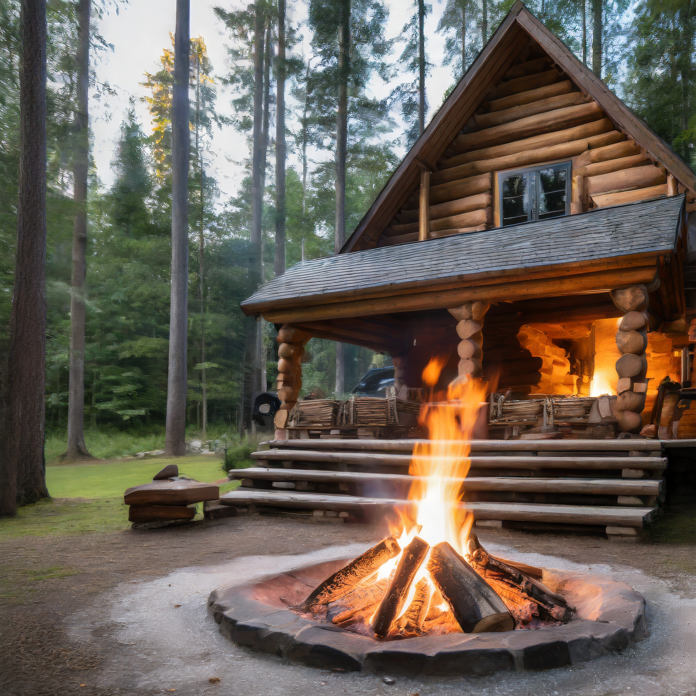

Chata Vodička je skvostným příkladem nádherné dřevěné architektury, která se harmonicky slévá s okolním
prostředím. Tato pohádková stavba vyniká svou jedinečnou estetikou a pohlcuje vás svým rustikálním šarmem.
Postavena z kvalitního dřeva, dává srubu neopakovatelnou eleganci a vytváří atmosféru klidu a pohody.
Jedním z hlavních lákadel chaty jsou její velká panoramatická okna, která nejen otevírají krásné výhledy do
okolního lesa, ale také dovolují přírodnímu světlu zalít interiér. Díky nim máte možnost sledovat rozkvétající
přírodu, pozorovat změny ročních období a prožívat jedinečné západy slunce přímo z pohodlí chaty.
